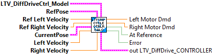
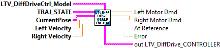
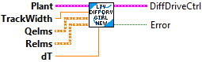
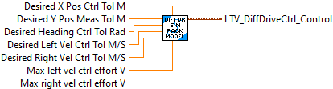
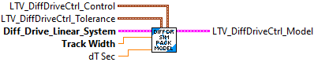
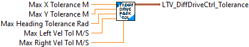
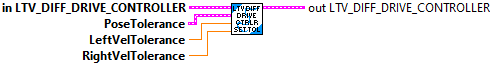

Returns true if the pose error is within tolerance of the reference.
Inputs:
- LTV Diff Drive Ctrl -- Controller data cluster
Outputs:
- At Reference -- True if the pose error is within tolerance of the reference.

Returns the left and right output voltages of the LTV controller.
The reference pose, linear velocity, and angular velocity should come from a drivetrain trajectory.
Inputs:
- in LTV Dif Drive Ctrl -- Controller data cluster.
- currentPose -- The current pose.
- leftVelocity -- The current left velocity in meters per second.
- rightVelocity -- The current right velocity in meters per second.
- poseRef -- The desired pose.
- leftVelocityRef -- The desired left velocity in meters per second.
- rightVelocityRef -- The desired right velocity in meters per second.
Outputs:
- out LTV Dif Drive Ctrl -- Updated controller data cluster.
- Left Voltage -- Left wheel output voltages of the LTV controller.
- Right Voltage -- Right wheel output voltages of the LTV controller.
- Error -- Returns TRUE if an error occured.

Returns the left and right output voltages of the LTV controller.
The reference pose, linear velocity, and angular velocity should come from a drivetrain trajectory.
Inputs:
- in LTV Dif Drive Ctrl -- Controller data cluster.
- currentPose -- The current pose.
- leftVelocity -- The current left velocity in meters per second.
- rightVelocity -- The current right velocity in meters per second.
- desiredState -- The desired pose, linear velocity, and angular velocity from a trajectory.
Outputs:
- out LTV Dif Drive Ctrl -- Updated controller data cluster.
- Left Voltage -- Left wheel output voltages of the LTV controller.
- Right Voltage -- Right wheel output voltages of the LTV controller.
- Error -- Returns TRUE if an error occured.

The linear time-varying (LTV) differential drive controller has a similar form to the LQR, but the model used to compute the controller gain is the nonlinear model linearized around the drivetrain's current state. We precomputed gains for important places in our state-space, then interpolated between them with a look up table (LUT) to save computational resources.Filters the provided voltages to limit a differential drive's linear and angular acceleration.
This LabVIEW single call function creates and executes the LTV Diff Drive controller.
The input linear system is defined as:
- states
- left velocity (m/s)
- right velocity (m/s)
- inputs
- left voltage (volts)
- right voltage(volts)
- outputs
- left velocity (m/s)
- right velocity (m/s)
Inputs:
- LTVDiffDriveCtrl Model -- cluster -- Packed data used to construct the LTV Diff Drive control system.
- Ref Pose -- Pose2d -- The desired pose setpoint. (Meters, Radians)
- Ref Left Velocity -- double -- The desired left velocity (Meters/sec)
- Ref Right Velocity -- double -- The desired right velocity (Meters/sec)
- Current Pose -- Pose2d -- The current pose. (Meters, Radians)
- Left Velocity -- double -- The current left velocity (Meters/sec)
- Right Velocity -- double -- The current right velocity (Meters/sec)
Outputs:
- Left Motor Dmd -- double -- Left wheel motor demand (+/- 1.0)
- Right Motor Dmd -- double -- Left wheel motor demand (+/- 1.0)
- At Reference -- boolean -- If TRUE, the current position is within the tolerance.
- Error -- boolean -- If TRUE, an error occured.
- out LTV DiffDriveCtrl -- cluster -- Internal data structure.

The linear time-varying (LTV) differential drive controller has a similar form to the LQR, but the model used to compute the controller gain is the nonlinear model linearized around the drivetrain's current state. We precomputed gains for important places in our state-space, then interpolated between them with a look up table (LUT) to save computational resources.Filters the provided voltages to limit a differential drive's linear and angular acceleration.
This LabVIEW single call function creates and executes the LTV Diff Drive controller.
The input linear system is defined as:
- states
- left velocity (m/s)
- right velocity (m/s)
- inputs
- left voltage (volts)
- right voltage(volts)
- outputs
- left velocity (m/s)
- right velocity (m/s)
Inputs:
- LTVDiffDriveCtrl Model -- cluster -- Packed data used to construct the LTV Diff Drive control system.
- Traj state -- Traj state -- The desired trajectory state. Contains desired position and velocity values. (Meters, radians)
- Ref Left Velocity -- double -- The desired left velocity (Meters/sec)
- Ref Right Velocity -- double -- The desired right velocity (Meters/sec)
- Current Pose -- Pose2d -- The current pose. (Meters, Radians)
- Left Velocity -- double -- The current left velocity (Meters/sec)
- Right Velocity -- double -- The current right velocity (Meters/sec)
Outputs:
- Left Motor Dmd -- double -- Left wheel motor demand (+/- 1.0)
- Right Motor Dmd -- double -- Left wheel motor demand (+/- 1.0)
- At Reference -- boolean -- If TRUE, the current position is within the tolerance.
- Error -- boolean -- If TRUE, an error occured.
- out LTV DiffDriveCtrl -- cluster -- Internal data structure.

The linear time-varying (LTV) differential drive controller has a similar form to the LQR, but the model used to compute the controller gain is the nonlinear model linearized around the drivetrain's current state. We precomputed gains for important places in our state-space, then interpolated between them with a LUT to save computational resources.Filters the provided voltages to limit a differential drive's linear and angular acceleration.
The input linear system is defined as:
The linear system is define as:
- states
- left velocity (m/s)
- right velocity (m/s)
- inputs
- left voltage (volts)
- right voltage(volts)
- outputs
- left velocity (m/s)
- right velocity (m/s)
Constructs a linear time-varying differential drive controller.
Inputs:
- plant -- The drivetrain velocity plant.
- trackwidth -- The drivetrain's trackwidth in meters.
- qelems -- The maximum desired error tolerance for each state. Matrix (5,1)
- relems -- The maximum desired control effort for each input. Matrix (2,1)
- dt -- Discretization timestep in seconds.
Outputs:
- DiffDriveCtrl -- Created data cluster
- Error -- If TRUE, an error occured.

Pack control values for LTV Diff Drive Ctrl execute function
Inputs:
- Desired X Pos Ctrl Tol -- double --- Maximum desired X position control tolerance (meters, Default: 0.0625)
- Desired Y Pos Ctrl Tol -- double --- Maximum desired y position control tolerance (meters, Default: 0.125)
- Desired Heading Ctrl Tol -- double --- Maximum desired heading control tolerance (meters, Default: 0.2)
- Desired Left Vel Ctrl Tol -- double --- Maximum desired left velocity control tolerance (meters, Default: 0.3)
- Desired Right Vel Ctrl Tol -- double --- Maximum desired right velocity control tolerance (meters, Default: 0.3)
- Max left vel ctrl effort V -- double -- Maximum left motor dmd control effort (volts, default 12.0)
- Max right vel ctrl effort V -- double -- Maximum right motor dmd control effort (volts, default 12.0)
Outputs:
- LTV Diff Drive Ctrl Control -- cluster -- Packed valules

Pack model, control, and tolerance values for LTV Diff Drive control execute function:
Inputs:
- LTV Diff Drve Ctrl -- cluster -- Packed control parameters
- LTV Diff Drive Tol -- cluster -- Packed tolerance parameters
- Diff Drive Linear System -- Linear system -- Diff Drive linear system
- Track Width -- double -- Track width (meters)
- dT Sec -- double -- Update time (Default 0.02)
Outputs:
- LTVDiffDrveCtrlModel -- cluster -- Packed model, control, tolerance values

Pack on target tolerance values for LTV Diff Drive Ctrl execute function
Inputs:
- Max X tolerance -- double --- Maximum desired X position tolerance (meters, Default: 0.04)
- Max Y tolerance -- double --- Maximum desired Y position tolerance (meters, Default 0.04)
- Max heading tolerance -- double --- Maximum desired heading tolerance (radians, Default 0.06)
- Max left vel tolerance -- double --- Maximum desired left velocity tolerance (meters/sec, Default 0.15)
- Max right vel tolerance -- double --- Maximum desired right velocity tolerance (meters/sec, Default: 0.15)
Outputs:
- LTV Diff Drive Ctrl Tol -- cluster -- Packed valules

Sets the pose error which is considered tolerable for use with the 'At Reference' function.
Inputs:
- LTV Diff Drive Ctrl -- Controller data cluster
- poseTolerance -- Pose error which is tolerable.
- leftVelocityTolerance -- Left velocity error which is tolerable in meters per second.
- rightVelocityTolerance -- Right velocity error which is tolerable in meters per seco
Outputs:
- out LTV Diff Drive Ctrl -- Updated controller data cluster